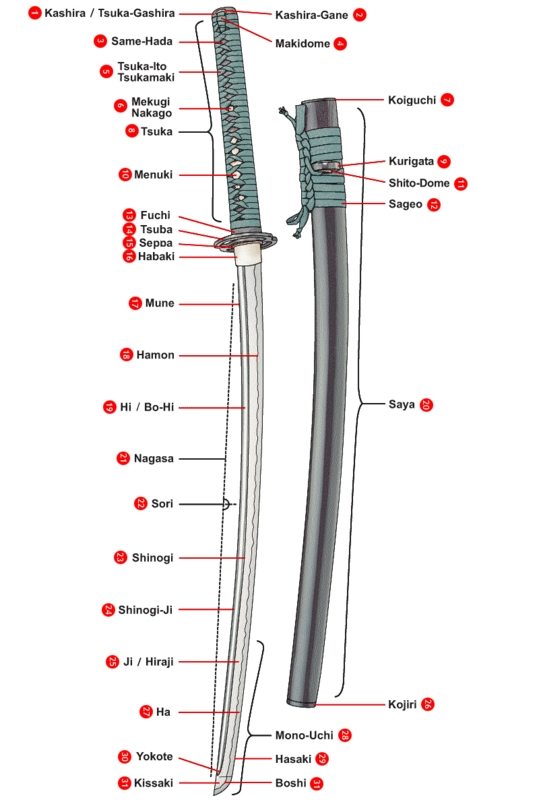

Katane
Katana je japanski naziv za mač. Koristi se za specifičnu vrstu oštrice zvanu daito, te se koristi od 1400-tih godina. To je zavijeni mač tradicionalno korišten od strane samuraja sa sječivom na vanjskoj strani oštrice. Mač se najčešće nosio sa wakizashiem (shoto), jednakim ali kraćim mačem. Isto tako se katana mogla nositi uz tanto, još manju ali gotovo isto oblikovanu oštricu. Ta dva oružja zajedno su se nazivali daisho, te su predstavljala moć i čast samuraja. Duga oštrica se koristila u otvorenoj borbi, dok se kraća oštrica koristila kao pomoćno oružje, za ubadanje, borbu na malim prostorima i seppuku, što je oblik ritualnog samoubistva poznatiji kako hara - kiri. Katana se primarno koristi za siječenje, te je namijenjena za dvoručni hvat. Tradicionalno se nosi sa rubom okrenutim na gore.
Koshirae je pojam koji predstavlja opremu mača. Dakle sve osim same oštrice. Po pravilu, koshirae bi se trebala prikazivati sa tsukom na lijevoj strani. Ovaj običaj je nastao zbog činjenice da se mač ne može tako jednostavno izvući na ovaj način. Isto tako, za mirnih vremena, koshirae se sprema sa tsukom nalijevo, dok se za vrijeme rata tsuka nalazi desno (kako bi se mač uvijek mogao izvući). Riječ koshirae dolazi od riječi "koshirareru", koji se danas više ne koristi. Uglavnom se koristi "tsukuru", te oba izraza znače napraviti, stvoriti, proizvesti. Točniji naziv je "toso", koji otprilike znači namještaj mača. "Tosogu" je generalni naziv za dijelove dok "kanagu" označava metalne dijelove. "Gaiso su vanjski dijelovi, dok "toshin" predstavlja "tijelo" mača. Dijelovi koshirae su: - Kashira: "kapica" na kraju drške - Fuchi: prsten iznad tsube - Same - kawa: ražina koža oko drške - Menuki: ornamenti na dršci (uglavnom ispod tsuka-ita) - Tsuba: Štitnik - Tsuka: drške - Tsuka - maki: svileni omot na dršci (tsuka - ito, ito - maki) - Habaki: klinasti ovratnik koji spriječava ispadanje mača iz korica te podupire neke dijelove u dršci - Seppa: brtveni prsten iznad i ispod tsube - Kozuka: maleni nož unutar sitnog "đepa" u koricama - Kogai: šiljak za uređivanje kose koji se nalazu u džepu sa druge strane - Wari - bashi: metalni štapići - Kuri - kata: "kuka" na koricama na koju se veže sageo - Sageo: uže kojim se korica veže za pojas (obi) - Koiguchi: otvor na koricama - Kojiri: kraj korica ili posebna "kapica" koja se nalazi na kraju - Kaishizuno: kukica koja spriječava nepoželjno micanje korica prilikom izvlačenja
Zbog izuzetnog značaja tsuba je dio mača koji se opisuje posebno. To je štitnik uglavnom ovalnog ili četvrtastog oblika koji se nalazi na kraju drške na raznim japanskim oružjima kao što su katana, tachi, wakizashi, tanto ili čak naginata. Tsuba pridonosi boljoj kontroli oružja (jer desni palac obično dodiruje tsubu), i zaštiti ruku. Tsube su uglavnom dekorirane, te danas imaju iznimnu kolekcionarsku vrijednost. Pravili su ih cijeli naraštaji majstora, čiji je jedini posao bila izrada samo tog jednog jedinog dijela. Većinom su obilno ukrašavane. Japanske obitelji samurajskih korijena ponekad imaju svoje familijarne grbove (mon) urezane u tsube. Mogu se naći izrađene od raznih metala i legura, a ponajviše od željeza, čelika, bakra, bronze te materijala koji se u Japanu zove shakudo, te za njega u većini drugih jezika nema naziva. Riječ je o leguri zlata i bakra (96% bakra), koja se koristila zbog prekrasne tamne plavo - ljubičaste patine koja se nakon nekog vremena hvata na nju.
Važne napomene za japanske mačeve: - tachi: nosi se oštricom prema dolje. Dužina nagase 70 – 80 cm. - katana (uchigatana): nosi se oštricom prema gore. Kraća nego tachi. U ranijim vremenima, kada su oklopi bili lakši, te se više oslanjalo na luk i strijelu, tachi je bio lakši, te više izraženog koničnog oblika od drške do vrha, bio je zaobljeniji jer je imao manji boshi - wakizashi: isti kako katana ali za otprilike trećinu kraći. - tanto: uglavnom se smatralo da je duljine do 30,5 cm.
